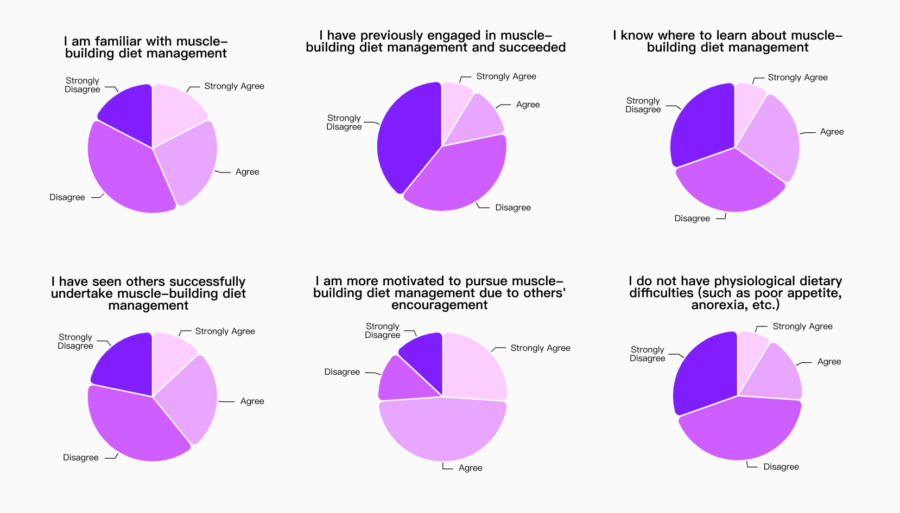

增肌饮食管理应用程序
帮助增肌中的健身者提高自我效能感，促成积极的饮食管理体验
对话交互
·
自我效能
·
AIGC

✍🏻Overview
饮食管理是增肌过程中不可或缺的重要环节，对增肌结果起着决定性作用。然而，现今的APP大多面向减脂场景，缺乏针对增肌场景的考虑，这使得增肌者常常缺乏针对性的资源和支持。Bulker是一款基于对话式AI技术的饮食管理应用程序，通过与人工智能Bulker进行对话，即可智能生成饮食计划，只需要按照计划执行即可准确摄入每日所需能量。
此外，Bulker还提供社交和知识支持，以帮助用户更好地理解健身术语和概念，寻找“健身搭子”，共同实现增肌饮食目标。
-
Timeline:
2022年秋季
Background
在校课程
My Role:
个人项目
Tools:
Figma
📈问题陈述&研究计划
通过在健身房的亲身体验，我发现：市场上的健身饮食管理APP主要面向减肥和减脂需求，
对于增肌者遇到的“不会吃”、“吃不下”等问题，并没有提供针对性的资源和支持。因此，部分增肌者为了快速取得效果，
会采取错误的饮食策略，如“脏增肌”，虽然能在短期内取得增肌效果，但也会使得胆固醇和血糖水平增加，
甚至导致心血管疾病和糖尿病
[1]。
明确了问题的大致范围后，我制定了适合本次设计研究与实践的完整计划：
该计划遵循双钻模型而制定，共分为五个阶段，在每个阶段下，我设定了具体的子任务，详见下图：


📈设计背景
随着全民健身战略的深入实施，人们的健身方式也呈现出多元发展的趋势，其中，又以“增肌”的增长速度最为迅猛。截至2021年4月，将增肌作为一种运动健身方式的人数相比2019年4月增长了40.6%，位居榜首 [2] 。同时，数据还显示，2021年4月互联网运动健身平台的用户增速相比于2019年4月，男性用户高达18.3%，显著高于女性。 这说明，男性运动健身习惯正在快速增强，而增肌作为男性首要的健身需求，亟需得到充分的考虑和产品介入。
📈产品调研
在设计研究的开始阶段，导师建议直接进行产品调研，对现有产品的策略点进行优势/劣势分析， 进而把模糊的问题陈述变得更具体。我选取了App Store评分前三名的相关产品进行分析，完整分析内容如下：
📈问题定义
经过前面的分析、讨论和总结，我决定将问题的靶心设定在“心理体验”上，并对前面初步的问题陈述做了清晰的定义：
接下来，鉴于“自我效能”所牵涉的领域属于心理学，而一般用户研究范式则基于社会学和人类学，因此，为了提高研究结果的科学性和准确度，导师建议将心理学研究的方法与用户研究相融合。具体而言，分为以下三个步骤：
一、检索文献，对问题进行理论分析和综述。
二、运用前人的理论对问题作出解释，并提出解释性的假说。
三、通过用户研究验证假说，并扩展更深层次的洞察。
遵循以上步骤，下面展开正式的问题分析。
📈问题分析
心理学家阿尔波特·班杜拉(Albert Bandura)将自我效能定义为人们对自己实现特别领域行动目标所需能力的信念 [2] 。个体的自我效能感在其完成目标、任务和挑战时扮演着主要角色。 根据班杜拉的自我效能理论，主要有四种因素影响着人的自我效能，如下所示：

📈问卷调查
根据上述假设以及研究目的，我参考了一般自我效能感量表
[4]
制定了以下问题：

最终回收问卷62份，其中，自我效能较低的样本数量为46人。经过定性分析，以上四项假设均能得到一定的验证。具体数据如下： 
根据以上结果，我将自我效能问题进一步细分为三个具体的问题：
· 经验或生成素养问题：用户不了解增肌饮食管理的知识，缺乏资源和支持。
· 建模或替代性经验问题：用户身边缺少“示范者”，对自己感到不确定。
· 生理因素问题：用户存在生理上的饮食困难。
📈用户访谈
根据上述细分问题，我制定了深度访谈大纲。为了深度挖掘用户的动机、痛点和需求，采用半结构化法访谈法。访谈主要话题如下：
1.您在增肌饮食管理的过程中遇到过哪些困难？是怎样解决的？
2.您一般通过什么方式了解相关知识？为什么会选择这个方式？
3.您觉得自己对相关知识的了解程度如何？
4.您的身边有多少这方面的“榜样”？他们对您有怎样的影响？
5.您遇到过哪些生理上的饮食困难？您是怎样应对的？
访谈完成后，我将用户原话中的关键词进行聚类，制作了亲和图。
基于亲和图，我对用户观点进行了深度的分析和讨论，最终得到以下洞察：
一、经验或生成素养
· 不相信：用户主要通过网络媒介获取知识，但由于媒介信息鱼龙混杂，用户缺乏信任。
· 搞不懂：专业的增肌饮食知识充满营养学术语，导致了学习困难。
· 算不清：系统的饮食管理需要定量控制，用户对食物克重难以建立概念及测量。
二、建模或替代性经验
· 不自信：用户认为自己身材瘦弱，缺乏自信，不敢和成功者进行交流和学习。
· 缺搭子：用户希望有“健身搭子”可以相互督促、共同坚持，但他们羞于或难于社交。
三、生理因素
· 吃不下：用户认为自己“胃口小”、“吸收力差”，需要先调理肠胃功能。
📈用户角色
基于以上洞察，结合导师的建议，我决定将“经验或生成素养”、“建模或替代性经验”作为划分依据，把用户分为两类并进行建模，以构筑清晰、针对性的设计策略。
· 工具型小白：对应经验或生成素养，他们因缺乏饮食管理的知识、方法和能力而感到低自我效能。
· 情感型小白：对应建模或替代性经验，他们因缺乏自信、羞于社交而感到低自我效能。
📈设计策略
根据上述用户角色，我将用户目标、痛点及需求进行了梳理，制定了三项设计目标。 然后，为了更好地实现这些目标，我通过跨学科研究的方法，将跨学科理论应用于设计指导，制定了以下策略：
📈功能架构
基于上述策略点，我对产品的主要功能进行了规划，制作了功能架构图：
📈信息架构
在此之后，我基于功能架构图制作了信息架构图将功能点转化为用户可感知到的信息， 这将有助于后续基于用户目标及场景设定任务，并根据任务流程设计关键界面及交互细节：
🎨解决方案
功能1：与Bulker对话，智能生成个性化饮食计划
💣问题：
· 系统的饮食管理需要定量控制，用户对食物克重难以建立概念及测量，不确定有没有吃够。
· 不知道什么食物消化好什么不好，也没有时间研究每日应该如何搭配食谱。
💡解决方案：
· AI智能生成计划：内置对话式人工智能“Bulker”，用户只需在智能计划的页面中向Bulker发起会话，就可以通过对话的方式生成智能食谱。
· 计划库与计划模板：用户可以浏览官方计划，或用户分享的“大神计划”,根据实际情况，将合适的计划添加到“计划库”中，随时启用。

📋用户测试反馈：
· 对智能计划的质量感到担心：用户没有过使用对话式人工智能的经验，因此，他们对AI比较缺乏信任感，担心生成结果存在质量不齐的问题，也不知道该如何与Bulker交流。但他们对此类技术依然保持期待。
· 信息较多：对于琳琅满目的计划模板，部分用户表示不会选择。他们希望得到一定的引导或筛选，帮助自己找到最合适的计划模板。
功能点02：用户浏览今日计划，打勾进行记录
💣问题：
· 记录饮食非常麻烦，流程复杂繁琐，常常感到疲惫。
· 对于一天的摄入量相当模糊，不确定吃了多少，吃够了没有。
💡解决方案：
· 打勾照着吃：计划生成后，用户在“今日计划”页查看饮食计划，只需要在对应的食物后打勾，就可快捷记录，无需传统手动记录。
· 计划库与计划模板：在“今日计划”页，用户可查看目标看板，及时记录各项目标进度，还可以查看营养面板。

📋用户测试反馈：
· 用户满意度较高：用户非常喜欢“打勾照着吃”，这一策略不仅简化了复杂的饮食记录过程，也帮助他们更简单地对食物克重建立概念。
· 修改食谱比较麻烦：遇到特殊情况时，用户需要修改食谱，此时可能会出现流程较长的问题。希望有更方便快捷的入口来修改食谱。
功能点03：浏览知识广场
💣问题：
· 网上资料信息太多太杂，很难区分哪些可信哪些不可信。
· 对营养学术语感到困惑，不知道是什么意思。
💡解决方案：
· 每日优质回答推送：Bulker会根据用户的建模数据预判其可能会遇到的问题，并向其推送合适的内容。Bulker会将优质的回答编录在“今日最佳”中供用户浏览，这同时也将激励创作者创作优质可信的内容。
· 问答社区：遇到困惑时，用户可以向Bulker询问答案。此外，用户还可以在问答社区进行提问，Bulker会把问题推送给优质的创作者们，这一过程也能够帮助用户与成功者建立联系，进一步提高他们的自信心。

📋用户测试反馈：
· 用户希望推送优质创作者：用户对优质回答的推送功能感到满意，在此基础上，部分用户提出，希望Bulker可以根据自己的需要推送优质的创作者，这样的话就可以直接发送私信咨询问题。
功能点04：用户浏览话题广场，并寻找“健身搭子”
💣问题：
· 用户缺乏来自他人的支持和鼓励。
· 用户不懂得如何与他人打交道，不敢向成功者讨教经验。
💡解决方案：
· 话题广场：在话题广场，用户可以选择自己感兴趣的话题讨论，得到社交支持。此外，用户还可以浏览其他人的成功经验，从而得到鼓励，提高自我效能。
· 找搭子：在“搭子”页面，用户可以根据距离、身高、体重等参数进行筛选，从而找到最适合自己的饮食管理伙伴。在对话页面，用户之间还可以分享计划，或是创建共同计划，从而以组队的形式共同实现饮食管理目标。
📋用户测试反馈：
· 用户希望获取更多他人的信息: 用户普遍表示，食谱分享是一个非常适合用于建立友谊、寻找话题的功能，他们希望在此基础上，可以在自己的个人主页展示自己的食谱和计划进度，从而让他人更好地了解自己，也更容易找到有相同口味的人。
📈总结与反思
· 设计方法和流程并不是一成不变的，当项目需求或问题具有特殊性时，方法和流程也将随之发生适应性的变化。例如，在本项目中，因为所面向的问题与心理学相关，因此选择将心理学的研究范式结合到设计研究范式中，以增强用研过程的科学性和结果的可信度。
· 除了定性的验证外，还需要补充定量的验证。例如可以考虑在用研过程中，使用SPSS工具对问卷结果进行分析；在解决方案中，可以选择个别用户反馈较差的功能进行A/Btest迭代，使用数据来证明方案的可行性；对于应用程序整体的可用性，可以借助系统可用性量表来进行定量的衡量。这些都可以作为后续补充工作的内容。